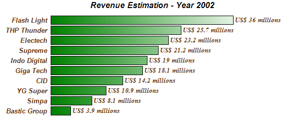

This example demonstrates a horizontal bar chart with no axes, grid lines or and plot area border. It also demonstrates using gradient colors for the bars, and a number of other ChartDirector features.
The key features demonstrated in this example are:
The following is the command line version of the code in "cppdemo/hbar". The MFC version of the code is in "mfcdemo/mfcdemo". The Qt Widgets version of the code is in "qtdemo/qtdemo". The QML/Qt Quick version of the code is in "qmldemo/qmldemo".
#include "chartdir.h"
int main(int argc, char *argv[])
{
// The data for the bar chart
double data[] = {3.9, 8.1, 10.9, 14.2, 18.1, 19.0, 21.2, 23.2, 25.7, 36};
const int data_size = (int)(sizeof(data)/sizeof(*data));
// The labels for the bar chart
const char* labels[] = {"Bastic Group", "Simpa", "YG Super", "CID", "Giga Tech", "Indo Digital",
"Supreme", "Electech", "THP Thunder", "Flash Light"};
const int labels_size = (int)(sizeof(labels)/sizeof(*labels));
// Create a XYChart object of size 600 x 250 pixels
XYChart* c = new XYChart(600, 250);
// Add a title to the chart using Arial Bold Italic font
c->addTitle("Revenue Estimation - Year 2002", "Arial Bold Italic");
// Set the plotarea at (100, 30) and of size 400 x 200 pixels. Set the plotarea border,
// background and grid lines to Transparent
c->setPlotArea(100, 30, 400, 200, Chart::Transparent, Chart::Transparent, Chart::Transparent,
Chart::Transparent, Chart::Transparent);
// Add a bar chart layer using the given data. Use a gradient color for the bars, where the
// gradient is from dark green (0x008000) to white (0xffffff)
BarLayer* layer = c->addBarLayer(DoubleArray(data, data_size), c->gradientColor(100, 0, 500, 0,
0x008000, 0xffffff));
// Swap the axis so that the bars are drawn horizontally
c->swapXY(true);
// Set the bar gap to 10%
layer->setBarGap(0.1);
// Use the format "US$ xxx millions" as the bar label
layer->setAggregateLabelFormat("US$ {value} millions");
// Set the bar label font to 10pt Times Bold Italic/dark red (0x663300)
layer->setAggregateLabelStyle("Times New Roman Bold Italic", 10, 0x663300);
// Set the labels on the x axis
TextBox* textbox = c->xAxis()->setLabels(StringArray(labels, labels_size));
// Set the x axis label font to 10pt Arial Bold Italic
textbox->setFontStyle("Arial Bold Italic");
textbox->setFontSize(10);
// Set the x axis to Transparent, with labels in dark red (0x663300)
c->xAxis()->setColors(Chart::Transparent, 0x663300);
// Set the y axis and labels to Transparent
c->yAxis()->setColors(Chart::Transparent, Chart::Transparent);
// Output the chart
c->makeChart("hbar.png");
//free up resources
delete c;
return 0;
}
© 2023 Advanced Software Engineering Limited. All rights reserved.